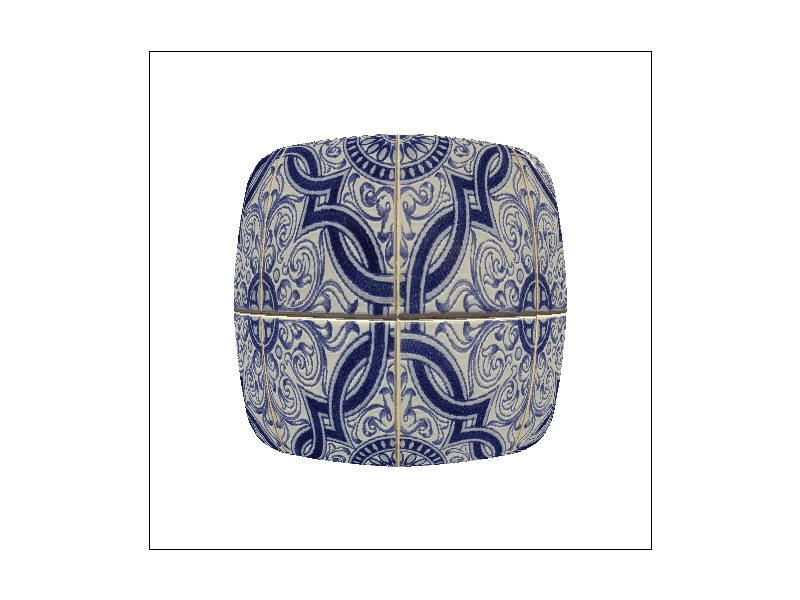
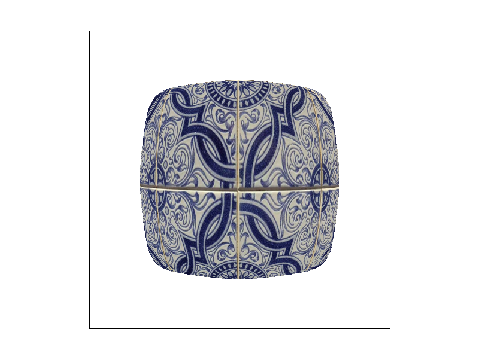
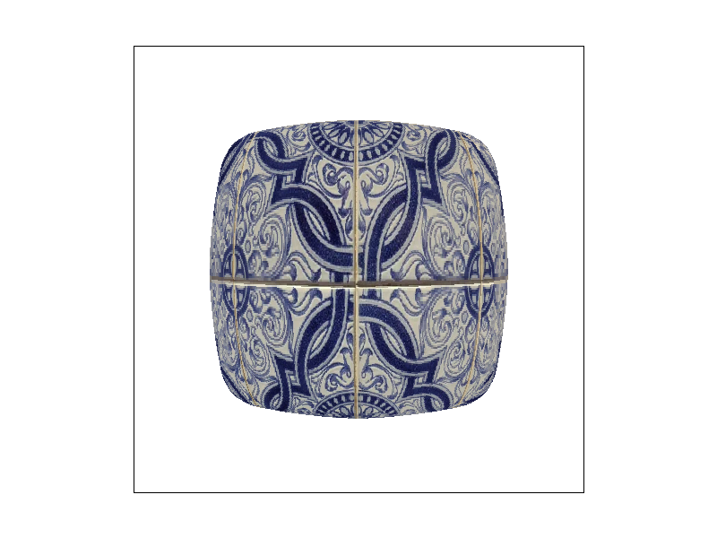

CS184/284A Spring 2025 Homework 1 Write-Up
Link to webpage: (TODO) https://cal-cs184-student.github.io/hw-webpages-kkboomer/
Link to GitHub repository: (TODO) cs184.eecs.berkeley.edu/sp25
Overview
Over the past few weeks and 6 tasks I was able to implement a basic rasterizer that can take SVG files and accurately render them out using a variety of techniques. This rasterizer can perform basic super-sampling to help deal with aliasing up to 16x, perform barycentric interpolation, and use level and pixel sampling to map textures to surfaces at various antialiasing levels. I had a lot of fun getting back into C++ and seeing how to implement the high level mathematical concepts learned in class into code (though my git commit messages suggest there was some pain along the way :)).Task 1: Drawing Single-Color Triangles
Inside RasterizerImp::rasterize_triangle and given 3 points, we first reduce the area of the bounding box by finding the maximum and minimum x and y values from the points passed in.
Then for each x and y position, we sample at the center of the pixel (an offset of 1/2 from the x or y position), then perform 3 half plane checks to see if the point is within the triangle.
Since we need to be able to deal with either cw or ccw winding order, we check if all edge checks or either all \(<= 0\) or \(>= 0\), if either is true, we can be sure that the pixel is inside the triangle and we color it.
Our algorithm still iterates over every pixel and sub-sample inside the triangle’s bounding box, just like a naïve implementation. The difference is that instead of recomputing edge functions from scratch for each sample, we incrementally update them using precomputed coefficients. This does not change the number of samples tested, so the asymptotic complexity remains the same, but it reduces the per-sample computation. Thus, the algorithm is no worse than checking each sample in the bounding box, and is strictly more efficient in practice.
EC optimizations
In terms of optimizations, previously I computed the edge tests for every point from scratch inside the loop, which especially when super-sampling came into the picture would slow down rendering. Since the edge checks are linear functions of the form \( Ax + By + C\), we can just increment the As and Bs as the loop progresses and cut out expensive multiplication calculations, I found that by and by only putting simple calculations inside the loops we cut down our computation and see the following gains. I did consider putting similar optimizations inside tasks 4 and 5/6. However, after encountering some funky artifacts that took too long to even diagnose, they were scrapped, which explains why super-sampling on test7.svg or anything in the texmap folder take much longer than anything in the basic folder. A future goal is to return to those functions and implement those optimizations.

Task 2: Antialiasing by Supersampling
Supersampling is the process of partitioning the pixel into subpixels and sampling those subpositions, and by increasing the sampling density we get a more accurate render of what is and is outside the triangle.
In order to implement super-sampling, we update RasterizerImp::set_sample_rate to allow us to update the sample rate,
RasterizerImp::set_framebuffer_target resizing the framebuffer to be the width and the height multiplied by the new sample rate.
Now the sample buffer stores one color per subpixel. In the RasterizerImp::rasterize_triangle function I added 2 more for loops,
that loop for \(sqrt(sample rate)\) times each, and perform the same checks from Task 1. We create new sampling points nx and ny, \(nx=x+(sx+0.5)/ sqrt(sample rate)\) and similar for ny.
They now see if this point nx or ny is in the triangle using the edge tests. Now instead of calling fill pixel, we just add straight to the framebuffer at base + sy * N + sx, where base is equal to \((y * width + x) * samplerate\)
and N is just the square root of the sample rate. resolve_to_framebuffer, we perform color averaging by summing the colors in the given range and dividing by the sample rate.

|

|

|
Now that we are sampling subpixels, we are able to more accurately judge whether a pixel is inside of the triangle or not. Now for every pixel, if any subpixel is inside the bounds of the triangle, they will be colored as an average between the subpixels, easing the transition between colors as well as reducing jagged edges since they will also get smoothed down by the averaging process.
Task 3: Transforms

I performed a simple transformation by rotating every limb except the left leg to form a k shape with the robot. Since some of the rotation points are not at the points where the limbs are closest to the torso, I had to perform slight translations to get the limbs to line back up with the body.
Task 4: Barycentric coordinates
Barycentric coords are a way of checking if a point is inside the triangle using its distance from a vertex. The weights alpha, beta, and gamma must sum to 1 and tell us how much that vertex affected the point. If all weights are non-negative, the point is inside the triangle and the pixel's color is determined by a weighted sum of alpha, beta, and gamma multiplied against each of the 3 colors we are interpolating. In the provided example, the vertexes are red, green and blue, and the color is determined by which of the vertices the point is closer to, one closer to the blue vertex is more blue, while one in the middle, with alpha, beta, and gamma being nearly equal, is mix of all 3 colors.


Task 5: “Pixel sampling” for texture mapping
Pixel sampling is how we determine the color of a pixel when using continuous textures onto a discrete screen of pixels. To implement this, I march over each pixel in the bounding box, calculate its barycentric coordinates. If the point is inside the triangle, we interpolate the uv coordinates, which are then mapped to the texture space and sampled according to the chosen sampling method.
In nearest sampling, we select the closest texel (the smallest unit that makes up the texture), and take that color, but this produces sharp and blocky results, which can look bad far away. In bilinear sampling, we do a similar process to supersampling in which we interpolate between 4 surrounding texels, and calculate a weight sum based on the fractional change in the x and y directions which produces a smoother final product.
I used texmap/test1.svg for all 4 screenshots


While at a glance nearest can be distinguished from bilinear thanks to its blockiness, the difference is amplified when textures are magnified or have detail at high frequency, since bilinear will smooth out that higher frequency detail to reduce aliasing while nearest will allow pixelated rendering.
Task 6: “Level sampling” with mipmaps for texture mapping
Level sampling determines which quality of a texture (aka mipmap level) should be used when sampling a texture for a pixel.
It solves the problem of a texture when viewed from far away and having the highest quality texture, many pixels corresponding to large regions causing aliasing.
By choosing a lower resolution version of the texture, we can better match how much texture is being compressed, reducing Moiré patterns and other aliasing artifacts.
I implemented this very similarly to the previous tasks. At every pixel in the bounding box, we compute the barycentric coordinates, and if it is within the region that is to be textured, we estimate the uv derivatives in the x and y directions which will help estimate the level of detail, then create a SampleParams struct to store our data, vectors, and pixel/level sampling methods.
From there we call the sample() method to get the color. During this function call, if the lsm is either L_ZERO (mipmap level 0) or L_NEAREST (nearest mip level rounded down), we do a similar call to the corresponding method for nearest or bilinear pixel sampling.
Otherwise, we perform a linear interpolation. We decide the 2 colors we will be linearly interpolating between based on the pixel sampling method chosen using this equation: \(c_0 * (1 - t) + c_1 * t\), where c_0 and c_1 are the colors at the current level rounded down
and 1 level up respectively, and the float t is the current level minus c_0. This produces a much smoother transition between the mip levels and reduces artifacts.
Pixel Sampling Level Sampling Number Of Samples Per Pixel (aka supersampling)
This method is one of the faster methods, especially in NEAREST mode since it is only 1 lookup. With LINEAR mode it gets a bit slower since we are performing 4 lookups and doing a weighted average, but it is still pretty fast. Both modes do not use extra memory we just use the original pixels to do our sampling. This method is not the best at antialiasing as aliased lines will still appear to be blocky and may still contain artifacts, especially when the texture is minified.
Level sampling is a bit slower than pixel sampling since we have to perform calculations to find the appropriate mipmap level, but it is still faster than number of samples per pixel since we are not performing multiple lookups for each pixel. We have to use more memory to store the mipmap texture, but it is worth it since it can prevent texture minification and moiré patterns.
This method is the slowest due to the time taken to compute each sample increases linearlry with the sample rate. It also uses more memory than per pixel sampling since we increase the size of our sample buffer linearly with the sample number. However, it has the best antialiasing power as it can help smooth out jagged edges and other artifacts by averaging neighboring pixels together.
|

|

|
|

|
|